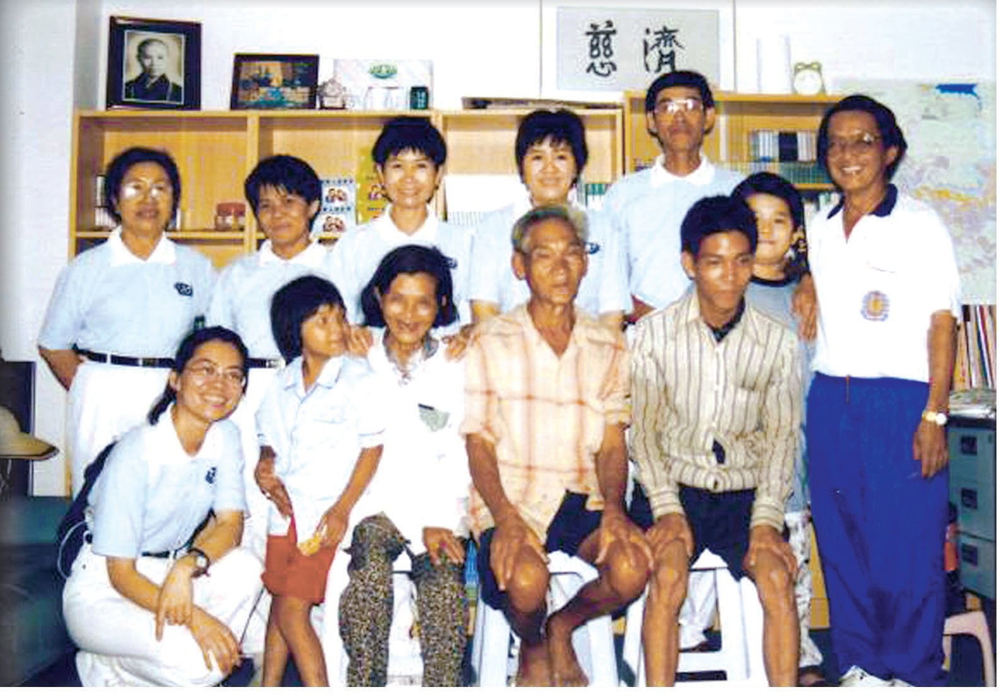
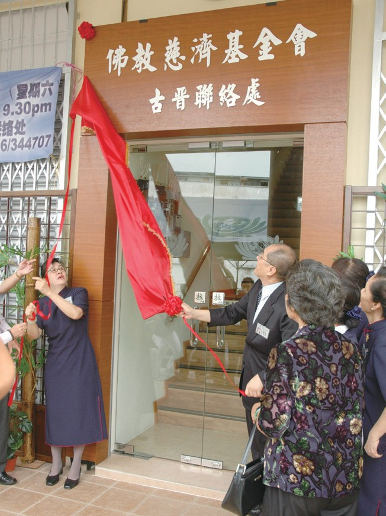
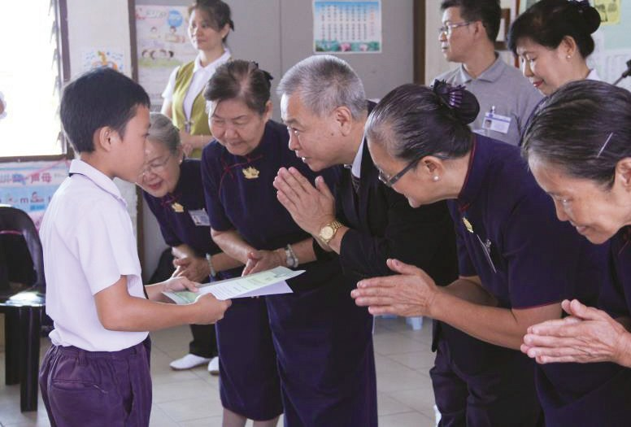
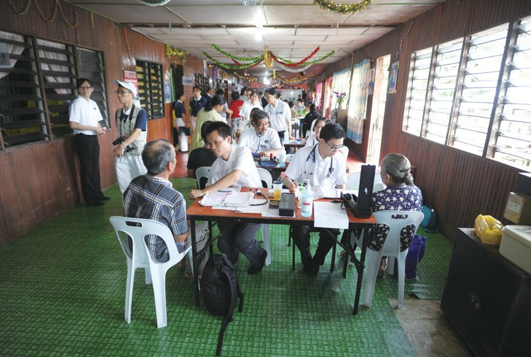
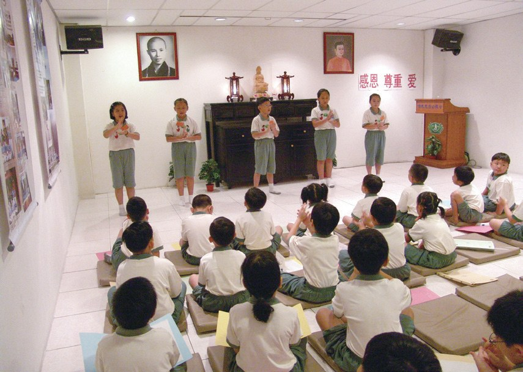
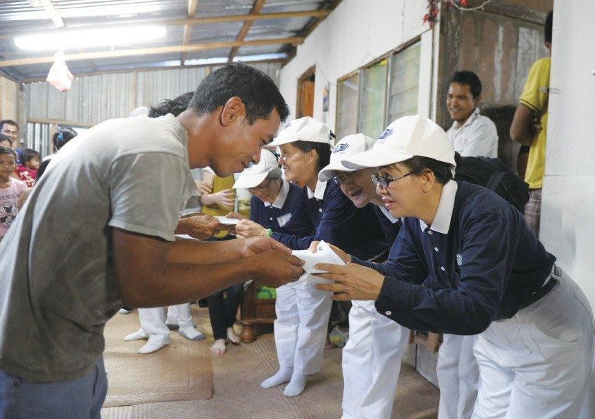
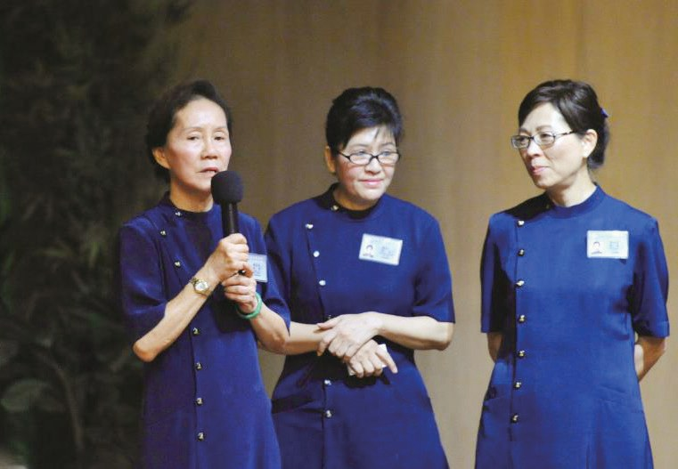
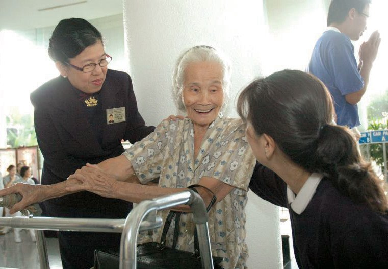
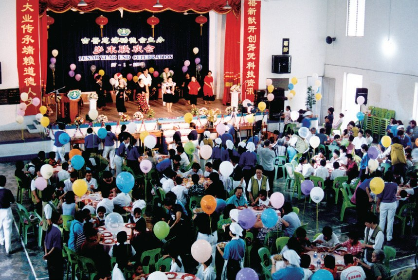
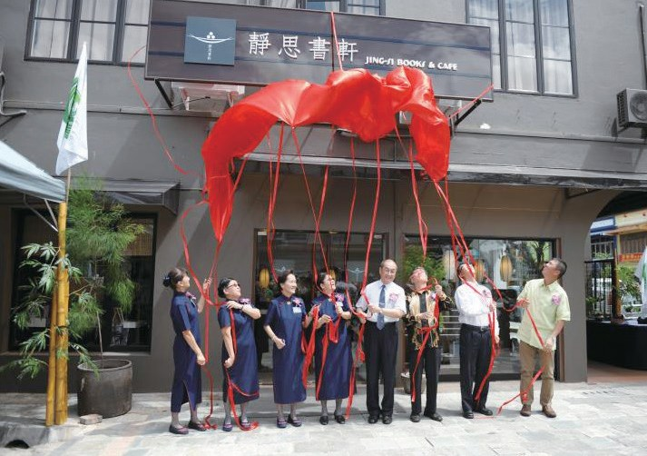

古晉支會
一間美容院的後半段，長出了什麼？

先別急著下結論，讀完再說說你的想法～
這一篇講古晉支會：1996年，一場茶會、一間美容院的後半段空間，慈濟在砂拉越生根。
你會讀到只讀過半年小學的「第一顆種子」、捐出祖業的阿嬤，還有在志工協調下齊心合力、四十多天蓋好房子的一家人。
下面是原書的節錄，紅色底線是我們替你標出的轉折點。
讀之前：你覺得在一個新地方推動慈濟，最需要什麼？
美容院的後半段
1996年，一場茶會之後。閱讀引導

賴奕娃返回古晉之後，挪出其美容院後半段空間作為聯絡點會所，開始邀約親友加入志工的行列，自此慈濟志業在砂拉越州開始發展。
變成了會所！
- 近一千三百位2002年p.654
- 四千餘人2007年p.654
- 一萬兩千名2010年p.655
2011年正式升格為古晉支會。

從兩戶到十一戶
慈善、醫療、教育、人文，一樣一樣做起來。閱讀引導
1996年，古晉聯絡點成立後，訪視工作也隨之展開。
猜一猜閱讀引導
志工一開始只拿到兩戶貧困家庭的資料，短短兩個月後，關懷個案增加到多少個？
……甚至在半夜接到個案過世的消息，就立刻前往關懷家屬，並協助辦理後事。

也立刻出門。

資助對象不分種族及宗教信仰，只要是清貧家庭的學生，皆可由校方推薦提出申請。

翻山越嶺前往內陸村莊，為鄉民提供西醫、中醫、牙醫、婦科和衛教等醫療服務，截至2019年共嘉惠1,548人次。

把醫生帶進村莊。
……於1999年1月20日舉辦「認識靜思語教學法研討會」，共有四百多位中小學老師出席，當下三十餘名教師發心成立古晉教聯會。

2026年，古晉和美里辦浴佛，三千人一起祈願。
用智慧去愛
四位古晉的「媽媽」。閱讀引導
賴奕娃出生於1958年，在九位兄弟姊妹中排行第六。家境貧困的她，只上了半年的小學即輟學，學歷不高也因此成為她心中的遺憾。
古晉聯絡點成立後，賴奕娃積極帶動志工訪貧，與照顧戶互動良好。還曾因一時不忍，將照顧戶的失智女兒帶回家照顧。
這樣好不好呢？
爾後在簡慈露與她分享慈濟訪視的精神原則後，她才瞭解慈濟的救濟，不只是單純的付出及給予援助，還要運用智慧。
賴奕娃十分好學，總是把握各種機會學習，不僅收看大愛臺汲取上人的法，掌握慈濟的脈動，也學著使用電腦，將所學用於推展慈濟事務。

也學會用電腦！

1996年，劉莉莉出席在古晉舉辦的幸福人生講座，體悟到人生寶貴，不該浪費時間，遂積極參與慈善訪貧及環保志業。即使是半夜，只要接到急難或個案的電話，也會立刻整裝出發。
會不會太心急？
劉莉莉在加入慈濟後，一開始仍受到習氣的影響，因為心急而與其他志工有言語上的衝突。但在慈濟人文的薰陶下，她也學習改變，懂得聆聽他人的建議，淨心淨口，不僅讓法親家人們大為改觀，也改善了自己與家人們的關係。
劉莉莉見志工們忐忑，想起家業中有一處位於鬧區的店面，遂極力向家人表示，希望能捐出祖業，使其成為傳法道場。

變成了書軒。

1998年時，眼見活動空間不敷使用的彭玉蓮，發心無償提供其店屋作為新會所……
2004年，溫美麗的身體出現異狀，某次訪視回程後，左眼突然看不見，同行志工見狀馬上協助處理，才化險為夷。
還要繼續做嗎？
「因果現前要歡喜接受」
溫美麗想起上人說過・p.667她不願人生空過，因此更積極地做慈濟，並發願要以願力化解業力。

最歡喜的一天
深山裡的一家八口。閱讀引導
鄭水膠一家八口居住於深山當中，原本家中兄弟感情不和，但經慈濟志工協調溝通之後，鄭家人齊心合力建屋，僅四十多天就完成了房屋工程。
四十多天蓋好房子！
「古晉的委員只有三個人，慈誠隊才兩個人，志工四十個，全部的會員是八百三十三人。即使只有這麼少的人，但他們還是發揮很大的功能，……」
上人得知後讚歎・p.668「……在屋子落成的時候，媽媽看到她的孩子們能齊聚一堂來跟她恭喜，這位老媽媽說，這一天是她這一生最歡喜的一天。」
上人說・p.668「慈濟人真可愛啊！不只是付出，還要把歡喜、快樂送到家，沒有那種『我是布施的人，你是受施的人』，反而在付出的同時，還要感恩。……」
上人說・p.668停一停：誰讓你記住了？閱讀引導
選一位你印象最深的人。沒有標準答案。
有人讓出美容院，有人捐出祖業，有人借出店屋，有人經歷眼疾的考驗後，更積極投入。哪一位讓你最有感覺？

一起回頭看看吧～
回望
依本章原文整理，每一條都標了原書頁碼。閱讀引導
背後原因
古晉慈濟怎樣長大

小川一開始只有幾個人，為什麼後來有一萬多名會員？
- 讓出空間
賴奕娃挪出美容院當會所。p.653

善舉傳開志工的善舉一傳十、十傳百。p.656
- 越來越多人
會員增加到一萬兩千名。p.655
後續發展
古晉一路走來

小禾從第一場茶會到升格支會，經過了多少年？
- 1996.7.20
慈濟人首次到古晉辦茶會。p.653
- 1996.11.1
古晉聯絡點成立。p.653
- 2002.11.16
升格為古晉聯絡處。p.654
- 2005.1.16
古晉人醫會成立。p.658
- 2011
升格為古晉支會。p.655
- 2012.4.8
古晉靜思書軒啟用。p.660

一個帶一群
善念傳出去
小禾古晉慈濟人帶動了哪些人？
- 第一圈老師
三十餘名教師成立古晉教聯會。p.659
- 第二圈醫生
醫師們成立古晉人醫會。p.658
- 第三圈書軒
劉莉莉捐出祖業成就書軒。p.665
以上只整理本章寫到的事；書裡沒寫到的，我們不替它下結論。
回頭看讀前的選擇閱讀引導
賴奕娃挪出美容院當會所，成為第一顆種子（p.653、663）；彭玉蓮無償提供店屋（p.665）；上人說古晉人雖少，還是發揮很大的功能（p.668）。會所和錢都重要，最先要有願意站出來的人。
志工是怎樣讓他們和好的？
只有你自己看得到喔！

準備好了就一起出發～